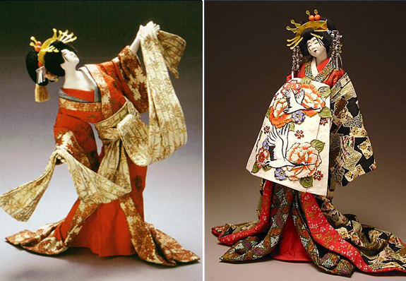
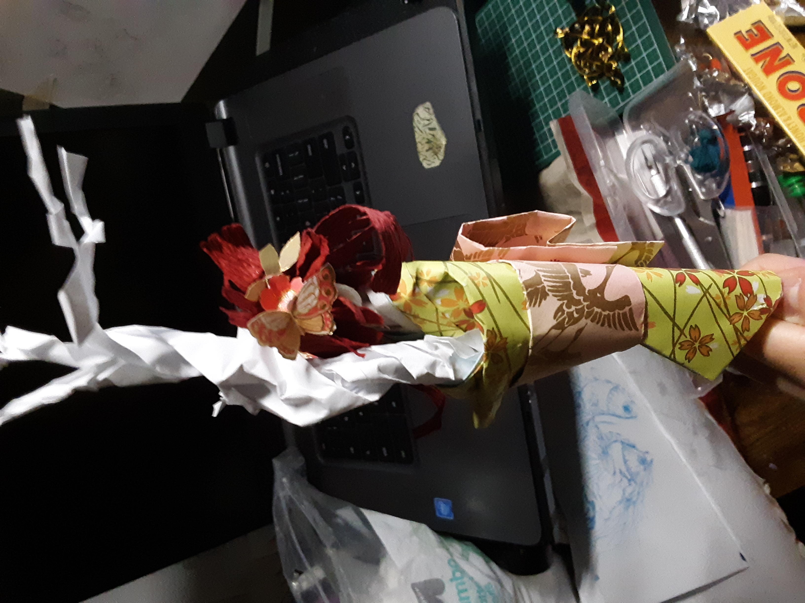
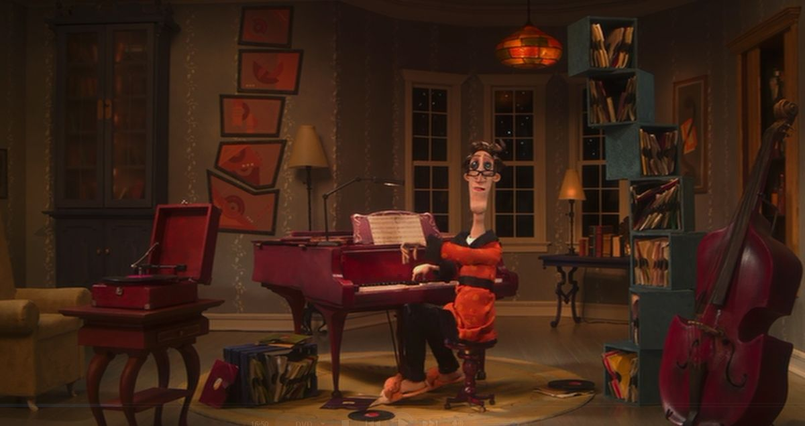

In 3D art, I like, well narrative as always, but I also like ceramic sculpture. In addition I like little lived in spaces, like a 3D world. An example of this would be Laika's Coraline, and dollhouses. But dollhouses made of our objects, like a bead as a decorative bowl or a toothpick is the handle of a rake. Lastly, I like the paper arts: Origami, and Washi Ningyo(japanese paper dolls). If I had the time, I would love to make a sculpture that takes paper and 3D world and has them in the same piece. I have the information for it, its possible! Currently, I'm taking a class which teaches you how to make a little guy in blender. I'm enjoying the feeling of sculpting something and I feel like its a lot easier than making it using traditional mediums, but that might be just because the Prof is good. But it's inspiring a love of blender. It reminds me of how I felt when I just started drawing. But everything is rendered realistically and all I need is 3 lights to make a random doohickey look nice Now if I could just figure out what I like and what I don't. And/or how I can make something specific. I'm making very beautiful trash.
Where the image is fromLink
This is an image from Taste of Japan depicting a Washi Ningyo. I'm not going to talk about what its made of aside from paper. What I like about the one on the left is their expressive movement. The only type of Washi Ningyo that I learned how to make did not have this much expressive movement. And much of the body was covered by the outfit. The hands are rendered, the torso tilts and teh face is actually rendered. To give an example, this is what I learned to make (in a beginners' class, I'll get to this pro level one day)
This is one I made myself. Here the body is as straight as a pole because there is a pole that keeps them standing(maybe on a stand). The arms are unseen, and the head is a blank oval. Though to be fair, between the one I made and the previous, mine is smaller by at least 6 inches. Some of these dolls are very big.
In this scene from the movie Coraline which was made by Laika, Coraline, standing in the viewer's place, meets the other father. Focusing on the location, everything is crafted by hand and looks real. But it's clearly cartoonish, not paying attention to the other father. The cello is goofy, and every piece of furniture has whimsy. But I particularly like the individually placed items,like the folders in the blue wack bookcase. That looks hella painstaking. But it makes the scene look lived in. With their imperfections. Ad I love that. The bits a pieces that make what would normally look like an Ikea showroom, something lived in. Once again, the messy contrasting with the organized. Juxtaposition!
Interactive web narrative main page link
Return to home pagehome